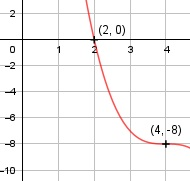

Aufgabe 45 f(x) = -x3 + 12x2 - 48x + 56 f'(x) = -3x2 + 24x - 48, f''(x) = -6x + 24, f'''(x) = -6 Definitionsbereich: -∞ < x < ∞ Wertebereich: -∞ < f(x) < ∞ Asymptoten: - Symmetrie: - Nullstellen: -x3 + 12x2 - 48x + 56 = 0 Durch Probieren gefunden x = 2. Hornerschema: -1 12 -48 56 x1 = 2 -2 20 -56 --------------------------- -1 10 -28 0 Polynomdivision: -x3 + 12x2 - 48x + 56 : (x - 2) = -x2 + 10x - 28 -(-x3 + 2x2) -------------- 10x2 - 48x + 56 -(10x2 - 20x) -------------- -28x + 56 -(-28x + 56) ------------ 0 -x2 + 10x - 28 = 0 |*(-1) x2 - 10x + 28 = 0 p, q - Formel: p = -10, q = 28 x2,3 = x2,3 = 5 ± x2,3 = 5 ± --> keine weiteren Nullstellen N1(2|0) Schnittpunkt mit der y-Achse: f(0) = - 03 + 12 * 02 - 48 * 0 + 56 = 56 Sy(0|56) Extrempunkte: -3x2 + 24x - 48 = 0 A, B, C - Formel: A = -3, B = 24, C = -48 x1,2 = x1,2 = x1,2 = x1,2 = 4 f(4) = -43 + 12 *42 - 48 * 4 + 56 = -8 f''(4) = 6 * 4 - 24 = 0 --> kein Extrempunkt Wendepunkt: 6x - 24 = 0 |+24 6x = 24| :6 x = 4, f(4) = -8, f'(4) = f''(4) = 0, f'''(4) ≠ 0 --> Wendepunkt (Sattelpunkt) (4|-8) Graph:
